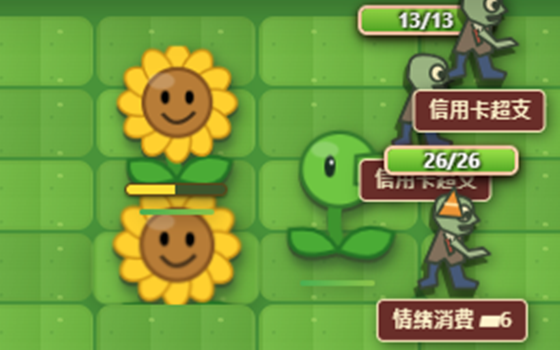
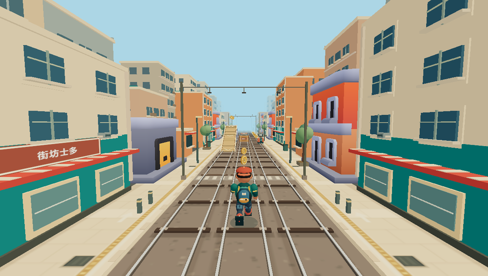
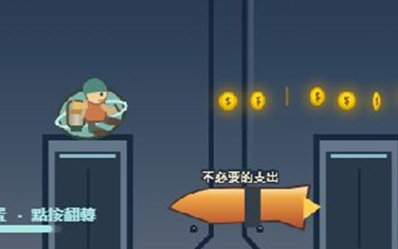
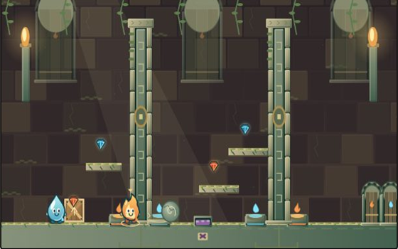
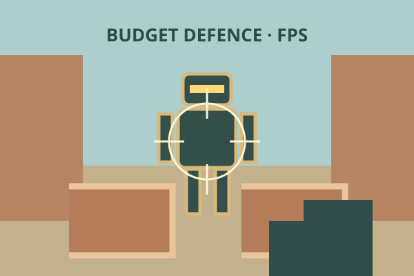

01 / 植物防守
預算守護花園
揀好植物，守住五條防線。先預留生產，再決定點分配有限資源。


先睇線索，唔急住判斷。
同一個人，可以有唔同角度。
用你知道嘅，講一句佢聽得入耳嘅話。
將故事，變成自己做得到嘅行動。
HK$ · 七日模擬
手上有幾多，到帳之前又要用幾多？改一個日期，睇清邊日要預留現金。
每日先計預計收入，再計支出。負結餘代表當日資金缺口。同日實際扣款時間可能有差異。
植物防守、街頭跑酷、飛行、合作同第一身機械人拆彈。
揀一款，直接開局。
揀好植物，守住五條防線。先預留生產，再決定點分配有限資源。

換線、跳躍，拾返細額收據。跑得越遠，誘惑越密。

穿過霓虹城市，避開導彈。收集金幣、磁石同護盾，挑戰九十秒。

行動等埋規劃。踩掣、開閘，喺倒數前一齊到門口。

第一身穿過街區、利用掩體制止消費壞習慣機械人。核對帳目，拆解財務炸彈。

唔需要一開始就好叻。可以揀輕鬆模式，再慢慢加難度。
手機／電腦都玩得記帳寫咗三日就停？今次，唔使追求完美。
完成故事，揀一個細到做得到嘅行動，試足七日。
每晚刷牙之後，
記低一筆支出。
官方計劃日程列明，11 月 9 至 13 日為理財教育計劃諮詢環節。
主線故事、簡報及五款遊戲已包在單一 HTML 檔案。離線版已停用線上排行榜，進度只保留在本機。
適用桌面 Chrome／Edge／Firefox。下載後以瀏覽器開啟，毋須安裝或登入。手機檔案預覽器可能無法執行遊戲。
飯錢、聚餐、實習收入同未來目標，冇一個答案啱晒所有人。我哋先透過問卷同街訪聽你講，再用講座、故事同遊戲，一齊搵到適合自己嘅理財習慣。